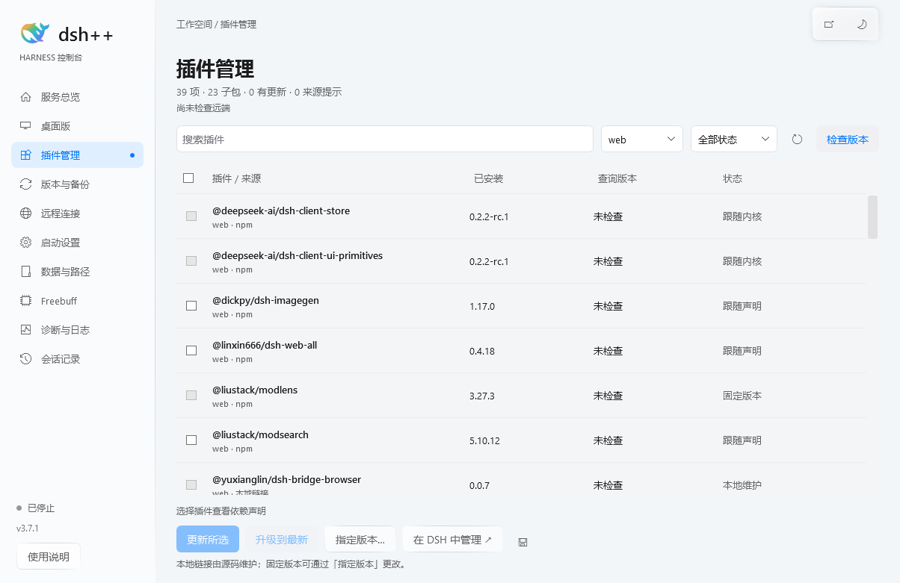
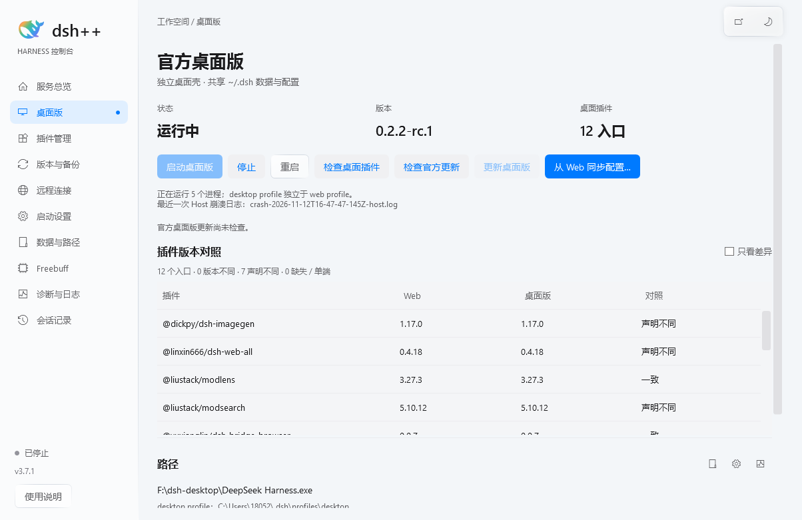
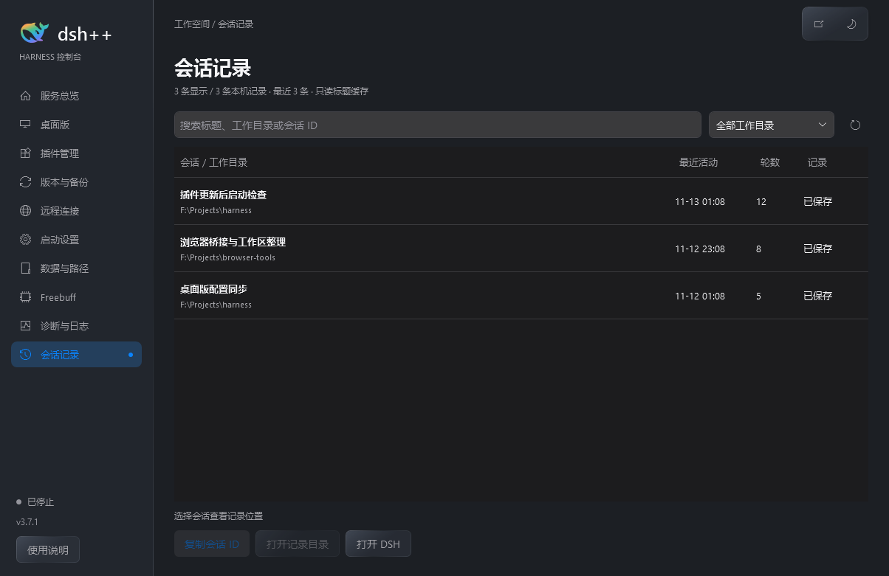
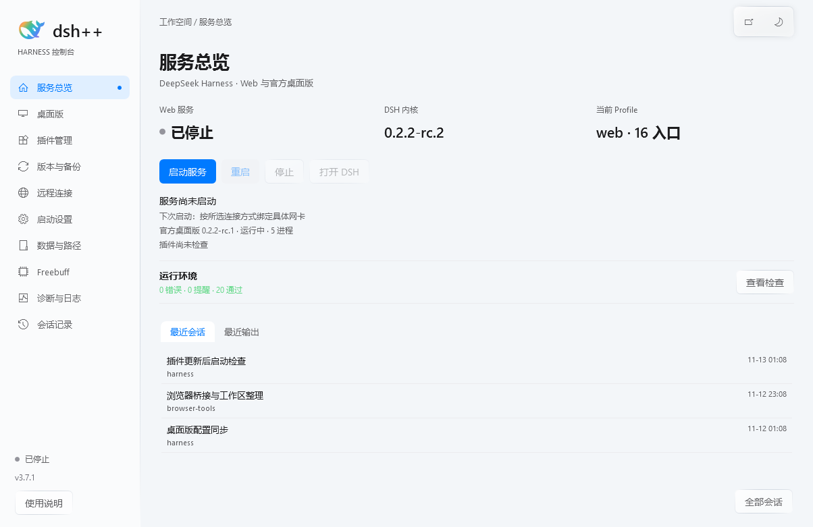

一个窗口，管好 dsh 的全部日常运维
启动、停止与重启 dsh web，验证网页就绪。本机入口保持 localhost，远程入口绑定所选网卡的具体 IP，进程替换后转发自动接续。
按来源、状态和 profile 筛选；普通更新只装声明内精确目标，「升级到最新」可选固定版本或浮动 ^ 声明，本地 link/file 不被静默替换。
检查与更新前读取目标版本的 DSH 内核要求（peerDependencies / engines），不满足时说明差距并先拦截，避免装上不兼容的插件。
管理 Electron 桌面壳进程、版本、日志和 desktop profile；可把 web 的社区插件与配置同步过去，官方 feed 更新经大小与 SHA-512 校验。
DSH 内核支持 latest / next（RC）/ alpha 通道与精确版本；每次维护先保存恢复点，失败或中断后可核对恢复，不删除锁文件。
同一 Wi-Fi / 自定义域名 / Tailscale 三种方式，大字地址一键复制；远程请求保留来源标记，仍受 DSH 认证与配对控制。
只读列出官方 DSH 会话目录的标题、工作目录与最近活动，支持搜索与筛选；不解压、不迁移、不改写官方数据。
本地只读体检覆盖启动资产、锁文件来源、overlay patch（多文档 / 重复条目）与中断维护；一键修复孤立的文档分隔符，日志导出自动脱敏。
需要 Windows 10/11、.NET 8 Desktop Runtime、Node.js 与已安装的 DSH
.NET 8 SDK
git clone https://github.com/Jensen-Yao/dsh-plus-plus cd dsh-plus-plus dotnet build dsh-plus-plus.csproj -c Release dotnet publish dsh-plus-plus.csproj -c Release -r win-x64 -o publish .\publish\dsh-plus-plus.exe --self-test